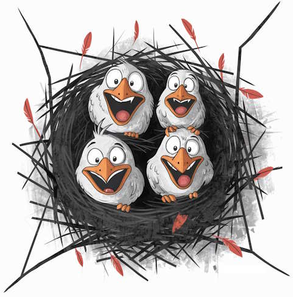

El primer paso

Empezamos
Hoy empezamos un nuevo blog, al que vamos a llamar “pajarracos”, en honor a mis 4 hijos que aún siguen en el nido, pero para los que debo dejar muchas lecciones. En este Blog voy a intentar ordenar muchas ideas y proyectos que tengo en mente, el tener que escribir sobre ellos me ayuda a fijar ideas y centrarme para ir resolviendo los que quedan pendientes.
Trataremos muchos temas, o esa es la iea inicial. Este blog será una bitácora de proyectos, tanto de los que van saliendo como de aquellos que no terminan y al manchar las hojas de tinta digitales al menos serán los amarres para volver de vez en cuando a ellos.
En estos ultimos años he comprobado lo útil que es un blog. La obligación que nos autoimponemos para escribir algo de cierta calidad es siempre una fuerza positiva que me ayuda a terminar cosas pendientes, a ordenar las ideas. Además al tratar de exponerlas de manera sencilla a los demás, aunque luego nadie los lea, es un esfuerzo que se compensa solo.
Hay tantas cosas que me gustan y que se quedan en el tintero, que el solo hecho de tenerlas ordenadas por fechas y disponibles por la web es una maravilla. Si además puedo ayudar a otros en algo, pues mejor que mejor.
Primer reto
el primer reto del Blog se lo debo al mayor de mis pajarracos. Resulta que quiere hacer un blog con unos amigos, sobre un tema nicho de esos que les gusta a los adeloescentes. Me encanta que quiera iniciarse en la web no solo como consumidor de contenido, que es lo que hacen la mayoría de los chavales. Y para ayudarles lo que puedo hacer es mostrarles cómo hacer un blog, sin gastrse un euro, y con las mejores herramientas del mercado.
Así que el primer proyecto es el comienzo de este mismo blog, que no es el de mi pajarraco, pero si que le proporcionaré las instrucciones para que ellos lo hagan.
Nos vemos en el siguiente post donde explicaremos cómo empezar un blog con herramientas libres y gratuitas!!
